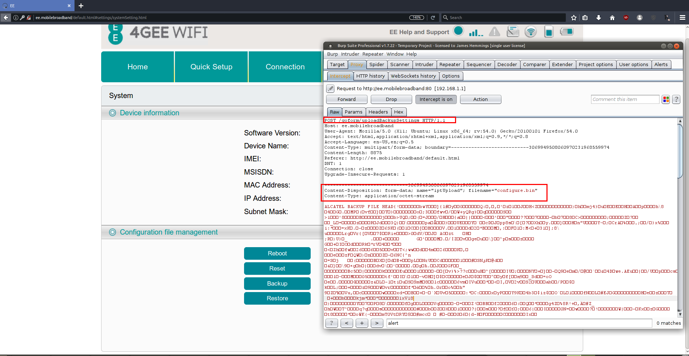
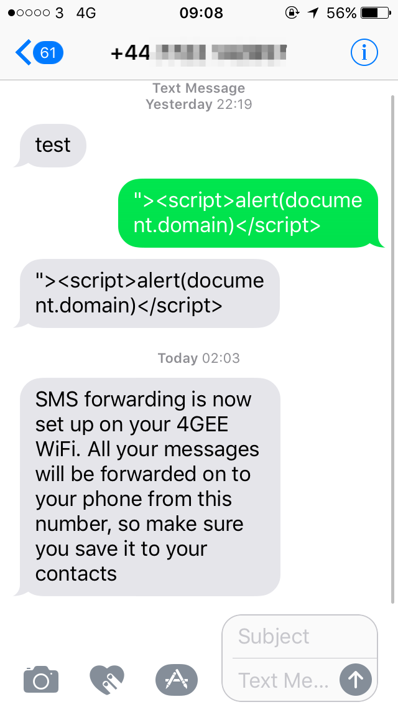
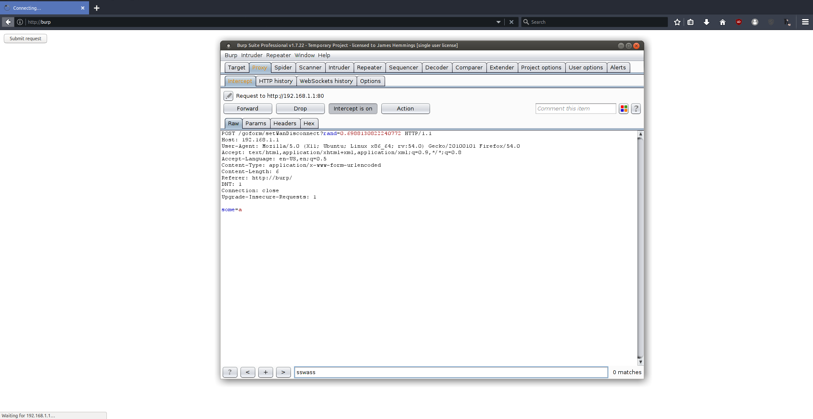

10 minutes
EE 4GEE Mobile WiFi Router - Multiple Security Vulnerabilities Writeup
After performing security testing on the 4GEE Mobile WiFi router it was discovered to be vulnerable to several security vulnerabilities. These vulnerabilities in combination make it possible for an attacker to remotely exploit the device, which can be achieved through having a user view a crafted texted message that was sent to him.
Other attacks are also possible by misleading and/or tricking users into executing code or clicking crafted URLs to trigger multiple functions such as device reset, device reboot, device restore (malicious config), sending SMS messages or stealing device configuration information, SMS messages and any other information on the device that a user may have access to and without authentication.
Additionally, multiple JSONP information disclosures were discovered, which display the full username and password of the administrative user while unauthenticated and allow access to multiple privileged functions such as device reset, device reboot and device configuration download/upload and SMS messages stored on the device.
I’d also like to note, the responsiveness and prompt vulnerability resolution from EE, as I was expecting this issue to get ignored or swept under the carpet, like most IOT/Router vulnerabilities, however in this case constant communication was kept throughout the process and the issues resolved.
Hardware Version/Model: 4GEE WiFi MBB (EE60VB-2AE8G83). Vulnerable Software Version: EE60_00_05.00_25. Patched Software Version: EE60_00_05.00_31. Vulnerability CVE(s): CVE-2017-14267, CVE-2017-14268, CVE-2017-14269. Proof of Concept Code: https://github.com/JamesIT/vuln-advisories-/tree/master/EE-4GEE-Multiple-Vulns
Attack Proof of Concept
After finding multiple security vulnerabilities, I decided to chain a number of these together to achieve device compromise remotely via SMS using Stored XSS and CSRF vulnerabilities, which clearly demonstrates the need for even low risk vulnerabilities being patched, as once other issues are found they can be used to achieve further levels of access, as I highlight below.
So firstly, I decided to create the malicious binary file that we will upload to the victim’s device, by modifying the username and password.
Next, I modified the device SSID and the network WPA2 key, which would deny the user access to the device, as the password and network information would have changed.
The binary configuration file was then saved to the attackers machine with the file name of “configure.bin”.
I then used the “Restore backup” option within the router administration page to intercept the POST request and generate the needed payload for the exploit, which in this case due to the binary data was using JavaScript XHR to send the request data. Additionally, I modified the payload options to submit the request automatically.
The request was then saved to a text file on a remote web server as “r.js” with the HTML data stripped, thus leaving only the specific function with the XHR data intact.
Next, I then sent an SMS text message to the routers phone number with the XSS payload of ‘">’. The specific name of “r.js” was used, as the remote device hides data over a specific length within the SMS list page and thus would not be executed correctly.
As you can see within the screenshot below, upon viewing the SMS Inbox the remote JavaScript payload is included within the webpage, thus executing the JavaScript XHR request to upload the binary data to the ‘/goform/uploadBackupSettings’ webpage.
Finally, the device configuration was modified with the uploaded binary data thus compromising the device integrity and locking the user out of the device, which would require device reset.
The home page was then accessed, confirming the router SSID of “Hacked Router”. Additionally, other venues of exploitation, would be to change the network proxy and provider settings which would allow an attacker to perform man in the middle attacks against the device, thus compromising it’s confidentiality.
Full Vulnerability Details
SMS List - Stored Cross Site Scripting (XSS)
The 4GEE SMS Inbox webpage is vulnerable to Stored Cross Site Scripting (XSS) within the “SMS_Content” parameter retrieved by “getSMSlist”, which allows an attacker to send malicious scripts to an unsuspecting user via SMS text messages and once executed an attacker could steal user cookies, device information, SMS messages or in this specific case reset the device to an attacker’s configuration, thus completely taking control of the device and its settings.
The first step in exploiting the vulnerability was to send an XSS payload to the routers mobile phone number provided by EE, as demonstrated below.
The SMS viewer webpage was then opened from within the router administration panel on ‘http://ee.mobilebroadband/default.html#sms/smsList.html?list=inbox'.
Next, the response from the ‘smsList’ GET request was returned with the XSS payload data within the “sms_content " parameter.
Finally the JavaScript payload was executed, displaying the domain context of ‘ee.mobilebroadband’.
Connections List – Stored Cross Site Scripting (XSS) & Cross Site Request Forgery (CSRF)
The 4GEE Connections List & Profile Management webpage is vulnerable to Stored Cross Site Scripting (XSS) and Cross Site Request Forgery (CSRF) within the “Name” parameter, which allows an attacker to send malicious scripts to an unsuspecting user via CSRF to then execute arbitrary JavaScript code on execution, which could then compromise sensitive SMS messages and/or data.
The first step to exploiting the vulnerability was to visit the “Profile Management webpage on ‘http://192.168.1.1/default.html#connection/profileManagement.html’ with the profile name parameter being set to ‘1’ and then sent to Burp Suite by clicking “Save”.
Next, the request was sent to the CSRF PoC generator via the “Action” button. In this case, an anti-CSRF token was noted “_TclRequestVerificationToken” in the request and was not added to the subsequent proof of concept code.
The “Test in browser” option was then selected, which was successful as demonstrated in the screenshot below.
Additionally, as shown below the XSS payload was triggered from the “Connection Status” page in addition to the “Profile Management” webpage.
Restore Configuration – Cross Site Request Forgery (CSRF)
The 4GEE configuration restore functionality is vulnerable to Cross Site Request Forgery (CSRF) attacks, which can be used by an attacker to execute any “GET” or “POST” requests that are not protected, in this case it allowed for an attacker to specify and upload a malicious binary configuration file that once uploaded, restores to the uploaded configuration. The application should implement robust refer header checking and/or anti-CSRF tokens that prevent the request when not sent with such requests.
The first step was to intercept the “uploadBackupSettings” webpage using Burp Suite and then send such request to CSRF PoC generator using the “Action” tab.

The payload was then automatically set to XHR and the option to “Test in browser” was selected to verify the vulnerability and it’s exploit vector.
Finally, the option to “Submit request” was selected from the webpage, with the subsequent request being captured in Burp Suite, showing the context and refer of “http://burp”.
As shown below, the binary configuration data was uploaded to the device causing it reboot.
SMS Redirection – Cross Site Request Forgery (CSRF)
The 4GEE SMS Forwarding functionality is vulnerable to Cross Site Request Forgery (CSRF) attacks within the “SMS Forwarding” web page, which can be used by an attacker to execute any “GET” or “POST” requests that are not protected, in this case it allowed for the redirection of any received SMS message once a user clicks a specially crafted URL or background script. The application should implement robust refer header checking and/or anti-CSRF tokens that prevent the request when not sent with such requests.
The first step was to visit the ‘http://192.168.1.1/default.html#sms/smsForwarding.html’ webpage, with my mobile phone number then being entered into the “Mobile Phone Number” input field.
Next, the “Apply” button was selected and the request intercepted within Burp Suite. Notice the presence of the “_TclRequestVerificationToken”, which in this case will be removed within the proof of concept, by sending the request to CSRF PoC generator as shown below.
The “Test in browser” option was then selected from the CSRF PoC generator screen, with the request then being submitted and intercepted within Burp Suite. As demonstrated below by the referer header and lack of anti-csrf token.
Finally, the presence of the vulnerability is confirmed by the SMS forwarding service being enabled and set to the attackers phone number, allowing an attacker to hijack all incoming SMS messages sent to the device via CSRF attacks.

Router Reset & Reboot – Cross Site Request Forgery (CSRF)
The 4GEE Reset/Reboot Router functionality is vulnerable to Cross Site Request Forgery (CSRF) attacks within the “System” web page, which can be used by an attacker to execute any “GET” or “POST” requests that are not protected, in this case it allowed for the remote device reset of the 4GEE device once a user clicks a specially crafted URL or background script. The application should implement robust refer header checking and/or anti-CSRF tokens that prevent the request when not sent with such requests.
The first step was to select “Reset” from the System section of the administration panel, located on ‘http://192.168.1.1/default.html#settings/systemSetting.html’.
Next, the request was intercepted within Burp Suite and then sent to CSRF PoC generator via the “Action” button.
The option to “Test in browser” was then chosen, with the “Submit request” then being clicked, as demonstrated below with the referer of “http://burp”.
Finally, the router reset was completed confirming the presence of such vulnerability.
Internet Connect/Disconnect – Cross Site Request Forgery (CSRF)
The 4GEE Connect/Disconnect functionality is vulnerable to Cross Site Request Forgery (CSRF) attacks within the “Connection Status” web page, which can be used by an attacker to execute any “GET” or “POST” requests that are not protected, in this case it allowed for the remote disconnection of the 4GEE device once a user clicks a specially crafted URL or background script.
The “Disconnect” option was firstly selected and then intercepted within Burp Suite.
Next, the request was sent to Burp Suite CSRF PoC Generator by selecting the “Action” menu.
The request was then sent to “Test in browser” and the option to submit the request was chosen, as identified below.

Finally, the users internet connection was disconnected.
Multiple Unauthenticated JSONP Information Disclosures
The 4GEE router uses various JSONP endpoints to retrieve and/or set data, which are vulnerable to unauthenticated information disclosure of sensitive configuration data, settings, administration password and SMS messages/lists, such unauthenticated disclosures could be remotely retrieved using CSRF/XSS/Phishing attacks previously disclosed or via unauthorised users.
The following endpoints have been deemed to be vulnerable:
[sourcecode language=“plain”] http://192.168.1.1/goform/getPasswordSaveInfo http://192.168.1.1/goform/getSMSAutoRedirectSetting http://192.168.1.1/goform/getSMSStoreState http://192.168.1.1/goform/getSMSReportlist http://192.168.1.1/goform/getSingleSMSReport?rand=0.133713371337 http://192.168.1.1/goform/getNetworkInfo http://192.168.1.1/goform/getSingleSMS?sms_id=1&rand=0.133713371337 http://192.168.1.1/goform/getProfileList http://192.168.1.1/goform/getRouterInfo http://192.168.1.1/goform/getSimcardInfo http://192.168.1.1/goform/getWlanInfo http://192.168.1.1/goform/getWlanClientInfo http://192.168.1.1/goform/getSysteminfo http://192.168.1.1/goform/getWanInfo http://192.168.1.1/goform/getImgInfo http://192.168.1.1/goform/getDMZInfo http://192.168.1.1/goform/getUsbIP?rand=0.13371337 http://192.168.1.1/goform/getUsbIP?rand=0.13371337 http://192.168.1.1/goform/getMACFilterInfo[/sourcecode]
After viewing various responses and requests within Burp Suite, various endpoints were accessed while not authenticated to the web application, which resulted in sensitive information being disclosed, such as the device username, password and SMS messages, as demonstrated below.
Disclosure Timeline:
27th July, 2017 at 21:32 GMT. Email sent with technical vulnerability information and PoC. 27th July, 2017 at 22:00 GMT. Response from EE devices manager, confirming receipt of PoC. 31th July, 2017 at 18:47 GMT. Update from vendor, patches being developed for reported issues. 1st August, 2017 at 10:43 GMT. Reply sent to vendor. 10th August, 2017 at 10:32 GMT. Update from vendor, patches still being developed. 18th August, 2017 at 12:11 GMT. Email sent to vendor asking for update/ETA. 18th August, 2017 at 12:15 GMT. Response from vendor, updates to be released on Monday. 18th August, 2017 at 12:30 GMT. Reply sent to vendor with device IMEI for online update process. 22nd August, 2017 at 15:54 GMT. Response from vendor, beta firmware released to verify changes. 23rd August, 2017 at 21:29 GMT. Reply sent to vendor, vulnerabilities successfully patched. 24th August, 2017 at 09:32 GMT. Response from vendor, patch publicly released to customers. 24th August, 2017 at 12:00 GMT. Full disclosure via Blog.
4gee 4gee-wifi-mbb advisory csrf ee ee60vb-2ae8gb3 jsonp mobile-wifi responsible-disclosure vulnerability xss
1925 Words
2017-08-24 01:00